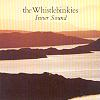

Celtic Lyrics Corner > Artists & Groups > Whistlebinkies > Inner Sound > Beloved Gregor
|  | Beloved Gregor |
| Credits : | Traditional; arranged by Whistlebinkies |
| Appears On : | Inner Sound |
| Language : | Gàidhlig (Scottish Gaelic) |
| Other Versions : |
"
Griogal Cridhe
" on Ishbel MacAskill's album Essentially Ishbel
" Griogal Cridhe " on Fiona Mackenzie & Arthur Cormack's album Seinn! O Ho Ro Seinn! " Griogair " on Talitha MacKenzie's album Spiorad " Griogal Cridhe " on Mac-talla's album ...Mairidh Gaol Is Ceol |
| Lyrics : | English Translation : |
| 'S iomadh oidhche fhliuch is thioram | Many a night, wet and dry |
| Sìde nan seachd sian | Or in the worst of weather |
| Gheibheadh Griogal dhomhsa creagan | Gregor would find a rock for me |
| Ris an gabhainn dìon | Where I would take shelter |
| Sèist : | Chorus (after each verse) : |
| Òbhan, òbhan, òbhan iri | Ovan, ovan, ovan iri |
| Òbhan iri ò | Ovan iri o |
| Òbhan, òbhan, òbhan iri | Ovan, ovan, ovan iri |
| 'S mór mo mhulad's mòr | Great is my sorrow, great |
| Dhìrich mi dh'an t-seòmar mhullaich | I climbed to the room above |
| 'S theirinn mi'n taigh-làir | And I went down to the room below |
| 'S cha d'fhuair mise Griogal cridhe | But I did not find beloved Gregor |
| 'Na shuidhe mu'n chlàr | Seated by the table |
| Eudail mhóir, a shluaigh an Domhain | Most loved of all the people of the world |
| Dhòirt iad t'fhuil an dè | They spilled your blood yesterday |
| 'S chuir iad do cheann air stob daraich | And they put your head on a stake of oak |
| Tacan beag bho d'chré | A short distance from your body |
| B'annsa bhi le Griogal cridhe | I would rather be with beloved Gregor |
| Teàrnadh chruidh le gleann | Looking after cattle in the glen |
| Na le Baran mór na Dalach | Than with the great Baron of Dull |
| Sìoda geal mu'm cheann | Wearing white silk around my head |
| Cha n'eil ùbhlan idir agam | I have no apples at all |
| 'S ùbhlan uil' aig càch | Like all the apples which others have |
| 'S ann tha m'ùbhlan cùbhr' ri caineil | My apples are as fragrant as cinnamon |
| 'S cùl an cinn ri làr | And the back of their heads on the ground |
| 'Nuair a bhios mnàthan òg' a'bhaile | When the young women of the town |
| 'Nochd nan cadal sèimh | Are sleeping peacefully tonight |
| 'S ann bhios mis' air bruaich do lice | I shall be beside your tomb |
| 'Bualadh mo dhà làimh | Striking my two hands |